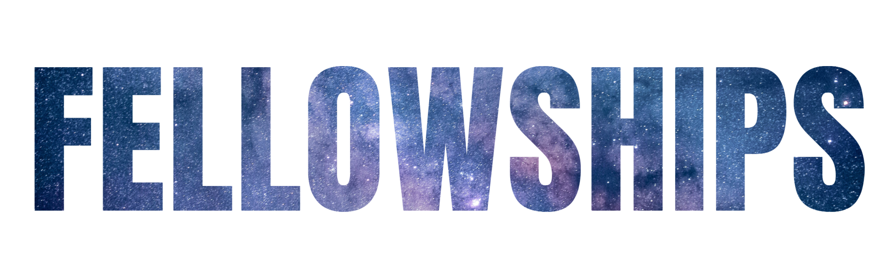
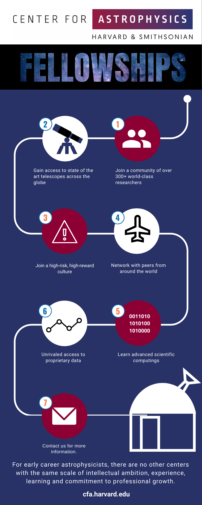

Launch your Career at the CfA
Why the CfA
Once dubbed “most important address in astronomy,” 60 Garden Street is the place to launch your professional career.
The CfA’s rich and varied astrophysics research programs are known globally for strength in observational and theoretical astrophysics, facilities design and development, leadership in NASA missions, and instrumentation for precision astronomy. Upwards of 300 Ph.D. scientists conduct research, advise and mentor students and fellows, and serve the larger astrophysics community. They conduct peer reviews and edit journals. They curate huge data archives and track the orbital paths of every known object in the Solar system. They administer the Astrophysics Data System and run the world’s most important astrophysics library. They hold board positions at small and large facilities and lead committees that shape the future of the field.
Fellowships Overview
Graduate Programs
Graduate students at Harvard benefit from the CfA's diverse research environment, with access to extensive facilities to pursue their work in a supportive and stimulating setting. Nearly 300 scientists from CfA's research divisions are available as advisors. Since 1985, students from other institutions throughout the world--in addition to those associated with the Harvard University Departments of Astronomy and Physics--have done their thesis research at CfA, through the SAO Predoctoral Fellowship Program.
Postdoctoral Programs
Several postdoctoral research fellowships, generally beginning in the summer or autumn of each year, are offered at the CfA, where nearly 350 Smithsonian and Harvard scientists work cooperatively in an environment that welcomes the ideas and contributions of young scientists. Research programs include instrumentation, observation, and theory in atomic and molecular physics, geophysics, the solar system, stars, galaxies, and cosmology. Techniques used range from computer simulations through observations across the bandwidths, to instrument development and laboratory experiments.
Visiting Scientist/Student Program
SAO's Visiting Scientist and Visiting Student Program is designed to facilitate the scholarly exchange of scientific information in the areas of atomic and molecular physics; infrared, optical, radio, and X-ray astronomy; geophysics; solar, stellar, and planetary sciences; and theoretical astrophysics. This program annually attracts many international and national visitors who come for a well-defined scientific purpose, including collaboration with specific individuals, study of unique data, or use of specialized facilities.